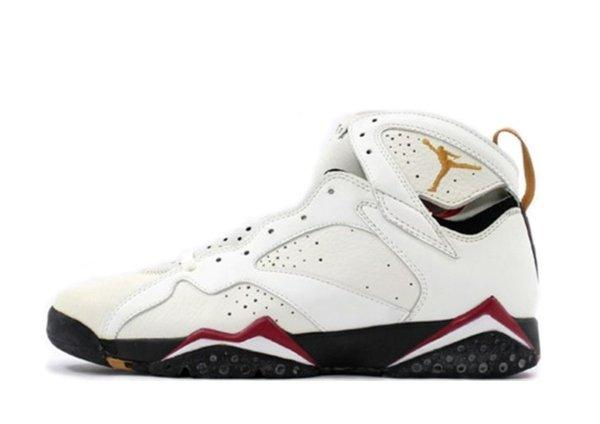

História do Air Jordan 7:
Lançado em 1992, o Air Jordan 7 marcou uma nova fase para a linha Jordan. Ainda desenhado por Tinker Hatfield, o modelo abandonou o solado translúcido e a unidade Air visível, apostando em um visual mais limpo, leve e inspirado na cultura africana, especialmente nos detalhes gráficos do tênis.
O AJ7 também foi o primeiro a trazer uma forte conexão com o basquete internacional: Michael Jordan o usou nos Jogos Olímpicos de Barcelona em 1992, como parte do lendário "Dream Team" dos EUA. Para essa ocasião, foi criada a versão especial "Olympic", que trazia o número 9 (que Jordan usava na seleção).
O tênis manteve o sucesso nas quadras e também ganhou força na cultura de rua, consolidando o status da linha Air Jordan como símbolo global de performance e estilo.